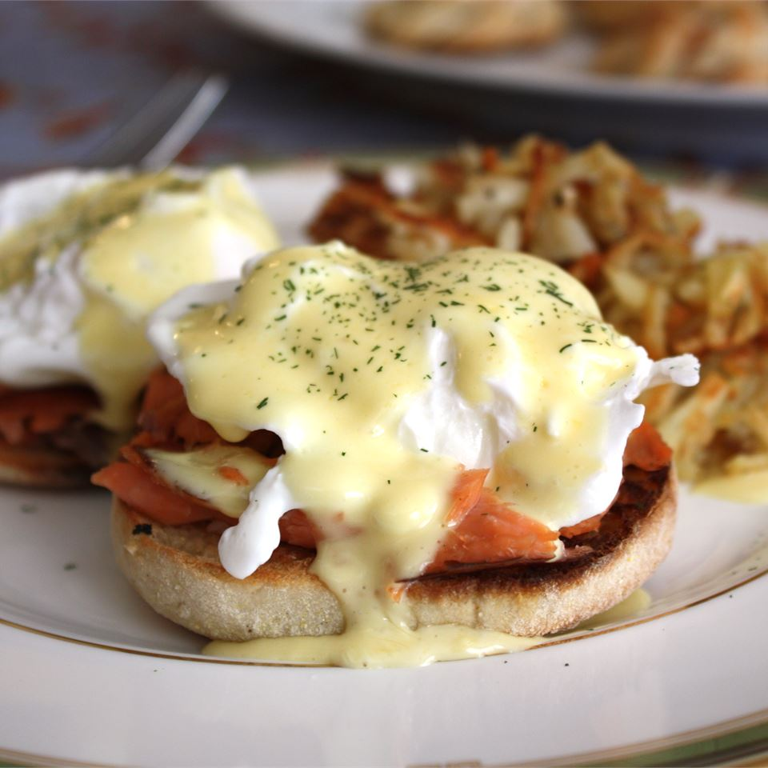

Blender Hollandaise Sauce

Description:
The easiest way to get perfect Hollandaise sauce is to use a blender.
This recipe has all the same ingredients as the classic,
but no double boiler and no chance of the sauce separating.
Ingredients:
- 3 egg yolks
- ¼ teaspoon Dijon mustard
- 1 tablespoon lemon juice
- 1 dash hot pepper sauce (e.g. Tabasco™)
- ½ cup butter
Directions:
- In the container of a blender, combine the egg yolks, mustard, lemon juice and hot pepper sauce. Cover, and blend for about 5 seconds.
- Place the butter in a glass measuring cup. Heat butter in the microwave for about 1 minute, or until completely melted and hot.
Set the blender on high speed, and pour the butter into the egg yolk mixture in a thin stream.
It should thicken almost immediately. Keep the sauce warm until serving by placing the blender container in a pan of hot tap water.